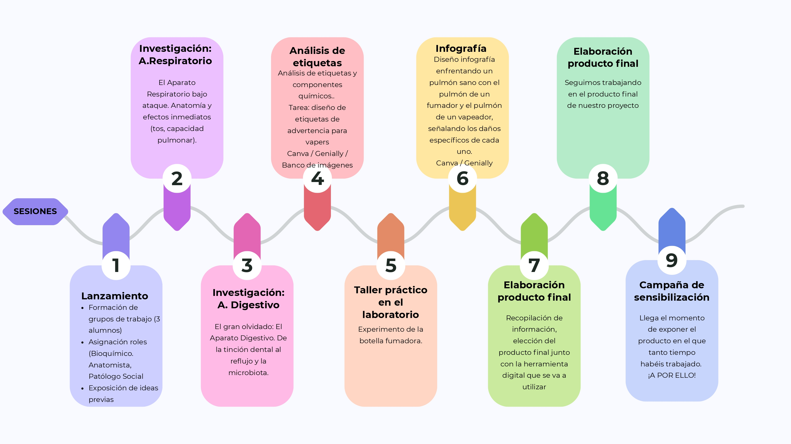

El reto: Diseñando la campaña de sensibilización
En este proyecto, no solo vamos a estudiar fisopatología; vamos a convertirnos en un equipo de expertos con una misión clara: revelar la verdad sobre el tabaco y el vapeo. Para ello, trabajaremos de forma cooperativa siguiendo este plan de acción:
Organización por Equipos y Roles: Trabajaremos en grupos de 3 personas, donde cada uno de vosotros asumirá una identidad profesional necesaria para el éxito de la campaña. Deberéis elegir quién desempeñará cada rol:
| Bioquímico | Experto en el análisis de sustancias y etiquetas. Su foco es la química que entra en el cuerpo. |
| Anatomista | Especialista en los sistemas respiratorio y digestivo. Su misión es observar cómo cambian los órganos |
| Patólogo Social | Responsable de entender el impacto en la salud de la comunidad y de diseñar el mensaje de sensibilización |
Las Tres Fases del Proyecto
Nuestro viaje se divide en tres etapas clave que nos llevarán desde la duda hasta la acción:
- Fase 1: Investigación y Recopilación: Exploraremos el "Centro de Recursos" y el Padlet para entender cómo el sistema respiratorio y el digestivo sufren bajo el ataque del vapeo.
- Fase 2: Misiones de Entrenamiento. Aquí es donde la teoría se vuelve práctica. Analizaremos etiquetas reales, realizaremos el experimento del pulmón en el laboratorio y diseñaremos infografías comparativas.
- Fase 3: La Gran Campaña: Con todas las evidencias recogidas, vuestro equipo elegirá su formato favorito (Podcast, TikTok o Animación) para lanzar vuestra Campaña de Sensibilización al resto del centro.
Línea Temporal
A continuación se detallan el orden de las sesiones en las que vamos a llevar acabo nuestro proyecto:
